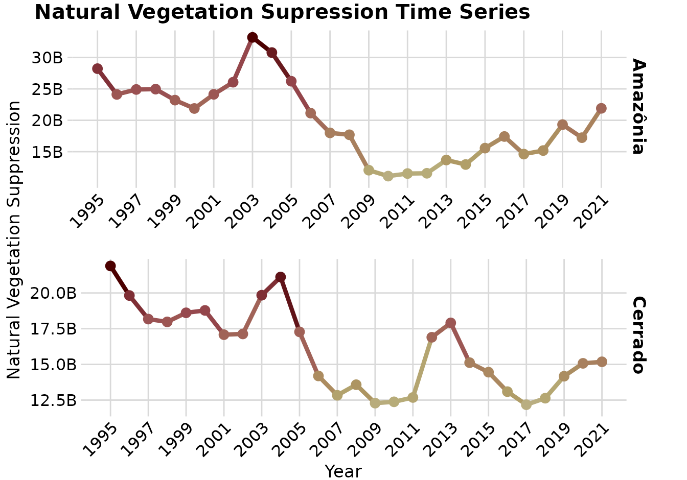

3 Resultados
3.1 Modelo Teórico
3.1.1 Desenvolvimento do Modelo Teórico
O desenvolvimento do modelo teórico é parcialmente conduzido com base nos dados levantados pelas consultas à literatura e pelas entrevistas. Esses dados refletem minha interpretação do que foi escrito ou dito nos conteúdos disponíveis.
A (Tabela 3.1) mostra parte das informações encontradas na literatura. Nela, é possível encontrar os objetos relacionados à , e qual é a descrição da relação entre ambos.
A partir das informações disponíveis, o modelo teórico foi desenvolvido através da repetição de um exercício de retrodução, como explicado na Seção 2.2. Nos pŕoximos paragráfos farei uma descrição do processo de retrodução para alguns objetos identificados na literatura e nas entrevistas.
3.1.1.1 O caso das rodovias
Um dos objetos mais discutidos na literatura são as rodovias e estradas (aqui chamadas somente como rodovias), sendo consideradas como um dos fatores mais importantes para a ocorrência da . Já sendo um objeto de relevância conhecida, agora é necessário realizar a seguinte pergunta: se a presença de rodovias causa a supressão, quais são as condições necessárias para que essa relação seja real? A partir dessa pergunta refletimos se a simples presença de uma rodovia em proximidade à um remanecente de vegetação nativa irá necessariamente causar sua supressão.
As rodovias servem como um meio de transporte de pessoas, maquinários e bens de consumo, portanto elas podem oferecer uma facilidade tanto para o acesso à um remanecente de vegetação natural e a execução de sua supressão, quanto para o transporte dos recursos extraídos da área aonde a supressão ocorreu (Laurance et al. 2002; Rosa et al. 2013; Miyamoto 2020). Somente a facilidade de acesso e transporte de bens não seriam as únicas vantagens oferecidas pela presença de rodovias, a apropriação e venda das áreas suprimidas também é um possível ganho financeiro proporcionado pela (Fearnside 1983). Porém, mesmo com vantagens financeiras aparentes, nem todos os remanecentes de vegetação nativa nas proximidades de rodovias sofrem supressão, portanto imaginamos que existem contrapontos que podem ser mais fortes do que os ganhos proporcionados pela supressão. No Brasil, a presença de áreas protegidas por lei são um exemplo visto como bem sucedido para evitar supressões (Barber et al. 2014), e que tem esse efeito mesmo quando localizados próximos a rodovias (Rosa et al. 2013).
3.1.2 Formalização do Modelo Teórico
O mecanismo generativo proposto para a é composto por quatro objetos:
- Valor: São valores abstratos que podem ser atribuídos a uma determinada vegetação natural, ocupando um determinado espaço num determinado momento;
- Benefícios: Os benefícios que a supressão de uma determinada vegetação natural (num determinado espaço, num determinado momento) pode proporcionar aos agentes envolvidos na ação de supressão;
- Malefícios: Os inconvenientes que podem surgir contra o agente, como consequência da sua ação de supressão de uma determinada vegetação natural (num determinado espaço, num determinado tempo);
- Trabalho: É a manifestação física de um agente social que realiza a ação de supressão da vegetação natural;
O mecanismo causal é a relação entre o valor atribuído à uma vegetação natural, e os benefícios e maleficios resultantes de sua supressão, seguida da possibilidade de execução do trabalho. A se manifestará quando o mecanismo causal for acionado, portanto, quando houver um contexto favorável, e houver a possibilidade de execução da supressão.
De acordo com o paradigma ontológico adotado, este mecanismo generativo situa-se no . Portanto eu assumo que ele é permanente, no sentido em que não se altera no tempo e no espaço, e que o fenômeno analisado, a só se manifesta quando este mecanismo generativo é acionado.
O mecanismo generativo pode ser acionado quando um agente social e a vegetação natural coexistem no mesmo espaço e tempo, surgindo um dilema sobre suprimir ou não a vegetação natural. O contexto da situação em que o mecanismo generativo é acionado, definirá as características do valor, dos benefícios, dos malefícios e da possibilidade de trabalho. Isto significa que, embora o mecanismo gemerativo não se altere ao longo do tempo e do espaço, ele mse manifesta de formas diferentes, de acordo com o contexto em que ele é acionado. A ideia desenvolvida neste parágrafo descreve o do paradigma ontológico adotado.
A forma em que o mecanismo da se manifestará muda de acordo com o contexto da situação. O valor atribuído à uma vegetação natural, os benefícios e malefícios gerados por sua supressão, e o trabalho exigido para a sua execução nunca são os mesmos. O valor de uma vegetação natural pode ser representado por aspectos culturais dos agentes sociais, enquanto os benefícios e malefícios podem ser representados como aspectos econômicos e sociais dos agentes, e o trabalho pode ser relacionado com a técnologia a disposição.
No entanto, a forma como esses aspectos do mecanismos generativo da são percebidos e interpretados pelos agentes sociais é sempre parcial. O agente social não tem acesso, ou é insensível, a certos valores sobre uma vegetação natural. O agente social tem também uma perceção parcial dos benefícios e malefícios, portanto desconhece todas as consequências da sua ação. Por fim, o trabalho que executou a supressão nem sempre é percebido, pois pode ser involuntário.
3.2 Análise Sociológica
3.3 Análise Estatística
3.3.1 Exploratory Data Analysis
In this section I analyze each variable of my model. It is important to note that all quantitative analysis were performed in the data stored in the base grid. So the figures and tables do not show distributions of the raw observations/estimates, but the values that were transformed to fit the grid cells (Figura 2.4).
All visualizations about the variables follows a common color scale, to facilitate their interpretation along the document (?fig-color-scale). The minimum values are represented by light gray color, values close to the median shows a yellow color, and maximum values as dark red color.
3.3.1.1 Natural Vegetation Suppression
The NVS is the phenomena of interest of this project.
Importante
READ:
- https://ssrn.com/abstract=4063325
- https://doi.org/10.1086/597794
- https://doi.org/10.1111/j.1475-682X.2007.00200.x
In the grid of analysis, the minimum area of NVS is 2 ha for the Amazon and Cerrado, and the maximum area is 18000 ha a year for the Amazon, and 12000 ha a year in the Cerrado Tabela 3.2.
The distribution of NVS area in the grid cells is heavily skewed towards smaller areas, specially in the Amazon, which also shows a high frequency of a diverse range of values ?fig-deforestation-hist. The distribution of NVS for the Cerrado is less skewed, and show more frequent values close to 1000 ha a year ?fig-deforestation-hist.
The cumulative NVS area shows that grid cells with high values of NVS accounts for the majority of the total NVS in a year, for the Amazon NVS from 3000ha to 18000 ha, which are the 25% highest values, accounts for 79% of all NVS ?fig-deforestation-cumsum. For the Cerrado, NVS from 900 ha to 12000 ha, the 25% highest values, accounts for 57% of the total NVS ?fig-deforestation-cumsum.
The spatial distribution of NVS shows a concentration in some regions of the Amazon, specially in areas in proximity to the Cerrado biome ?fig-deforestation-spatial-distribution. However, the distribution of NVS in the Cerrado shows a different pattern, where the NVS occurrence is spread in the whole biome ?fig-deforestation-spatial-distribution.
The NVS time series shows periods of increase of NVS in the Amazon from 1985 to 2003, followed by a consistent drop of NVS area after 2003 Figura 3.1. For the Cerrado, the NVS area have been decreasing since the start of the time series, with some periods of increase in 2004 and 2013.

The natural vegetation types that suffered suppression are Forests, Grasslands, Savannas and Wetlands. In the Amazon, the majority of NVS occurs over Forests, and in the Cerrado it occurrence is predominant over Savannas ?fig-deforestation-colsum-natural.
The antropic land uses that followed after NVS are predominantly Pastures for both biomes ?fig-deforestation-colsum-human. However, Mosaic of Uses and Temporary Crops share a significant amount of NVS area in the Cerrado ?fig-deforestation-colsum-human.
3.3.1.2 Conservation Units
The creation of conservation units is a main strategy to protect natural landscapes in Brazil. The creation of protected areas in Brazil dates from 1896, with the creation of the first National Park in São Paulo (Drummond, Andrade Franco, e Ninis 2009), however, it was only in 2000 that a law was approved to create a system to organize and regulate the UCs, named as the National System of Conservation Units (SNUC) (Drummond, Andrade Franco, e Ninis 2009; Borges, Rezende, e Pereira 2009; Moreira et al. 2021). The SNUC comprises federal, state and municipal UCs of different characteristics (Borges, Rezende, e Pereira 2009).
In the grid of analysis, the maximum area occupied by UC in a single cell is 78000 ha, which is the total cell area ?fig-uc-summary. The majority of cells do not present any area of UC ?fig-uc-summary.
When analyzing the grid cells with any cover of UC, we observe that in the Amazon, most those grid cells are fully occupied by UC ?fig-uc-hist. The situation is very different for the Cerrado, where most pixels occupied by UC shows small areas, indicating that small UC are more frequent for this biome ?fig-uc-hist.
The spatial distributions of UC in the Amazon and Cerrado are very different. In the Amazon it is possible to observe a large number of big UC, while in Cerrado most of UC are smaller as scattered around the biome ?fig-uc-spatial-distribution.
The time series of accumulated UC area over time shows a steady increase from 1985 to 2010, followed by a period of stagnation of the creation of new UC for the Amazon and Cerrado ?fig-uc-timeseries.
3.3.1.3 Policies
There are a large number of laws, decrees, resolutions and commitments made in Brazil with the objective to decrease NVS. These are organized in a timeline with some key policies related to NVS ?fig-pp-timeline.
The details of these policies are summarized in the Tabela 3.3, which shows the beggining and end of the policy, their spatial coverage and a general description.
3.4 Final results
The final results section will present the divergences and convergences between the qualitative and quantitative results, summarizing the findings in tables and diagrams.
References
Barber, Christopher P., Mark A. Cochrane, Carlos M. Souza, e William F. Laurance. 2014. «Roads, deforestation, and the mitigating effect of protected areas in the Amazon». Biological Conservation 177: 203–9. https://doi.org/10.1016/j.biocon.2014.07.004.
Borges, Luís Antônio Coimbra, José Luiz Pereira de Rezende, e José Aldo Alves Pereira. 2009. «Evolução da legislação ambiental no Brasil». Revista em Agronegócio e Meio Ambiente 2 (3): 447–66.
Drummond, Jose Augusto, Jose Luiz de Andrade Franco, e Alessandro Bortoni Ninis. 2009. «Brazilian Federal Conservation Units: A Historical Overview of their Creation and of their Current Status». Environment and History 15 (4): 463–91. https://doi.org/10.3197/096734009x12532652872036.
Fearnside, Philip M. 1983. «Land-use Trends in the Brazilian Amazon Region as Factors in Accelerating Deforestation». Environmental Conservation 10 (2): 141–48. https://doi.org/10.1017/s0376892900012236.
Laurance, William F., Ana K. M. Albernaz, Götz Schroth, Philip M. Fearnside, Scott Bergen, Eduardo M. Venticinque, e Carlos Da Costa. 2002. «Predictors of deforestation in the Brazilian Amazon». Journal of Biogeography 29 (5–6): 737–48. https://doi.org/10.1046/j.1365-2699.2002.00721.x.
Miyamoto, Motoe. 2020. «Poverty reduction saves forests sustainably: Lessons for deforestation policies». World Development 127: 104746. https://doi.org/10.1016/j.worlddev.2019.104746.
Moreira, Kátia Soares, José Alves Junqueira Júnior, Paulo Eduardo de Oliveira Sousa, Heitor Soares Moreira, e Danielle Pereira Baliza. 2021. «A evolução da legislação ambiental no contexto histórico brasileiro». Research, Society and Development 10 (2). https://doi.org/10.33448/rsd-v10i2.12087.
Rosa, Isabel M. D., Drew Purves, Carlos Souza, e Robert M. Ewers. 2013. «Predictive Modelling of Contagious Deforestation in the Brazilian Amazon». Editado por Bruno Hérault. PLoS ONE 8 (10): e77231. https://doi.org/10.1371/journal.pone.0077231.